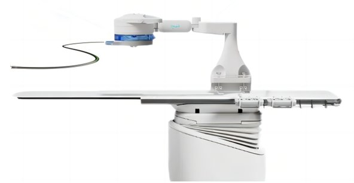

Commercial and clinical-stage systems · rational_denova2023
RATIONAL

1 / 5


- Family
- Commercial and clinical-stage systems (clinical-stage)
- Devices
- 4: microguidewire, microcatheter, aspiration catheter, stent retriever; guide/aspiration catheters inserted manually
- Degrees of freedom
- N.R.
- Push
- Not reported
- Twist
- Not reported
- Tested up to
- Human
- Sim-to-real
- None found — No simulation-trained controller found for this robot.
Testing
- Highest level
- Human
- What was tested
- 10 pts first-in-human, Beijing Tiantan, Oct 2023-Jun 2024 (yang2025_use); trial NCT05972252, start 2023-10-15, Beijing Tiantan Hospital (clinicaltrials2023_nct05972252)
- Key numbers
- mTICI 3 in 8, 2b in 2; puncture-to-reperfusion 65.10+-22.23 min (robotic 13.70+-5.18, manual 51.40+-20.16); console dose 0.18+-0.11 vs 59.21+-52.57 uSv; 90-day mRS<=2 in 7; technician device exchange = main limitation
Mechanism
- Push (translation)
- N.R.
- Twist (rotation)
- N.R.
- Device range
- N.R.
- Target anatomy
- neurovascular (mechanical thrombectomy, anterior circulation)
Sensing and interface
- Force sensing
- N.R.
- Leader and haptics
- N.R. (three joysticks)
- Imaging
- console outside room
- Sterility
- preloaded single-use cassette (DNNSJ07-IR)
Size
- Footprint (mm)
- N.R.
- Mass (kg)
- N.R.
Simulation
- Simulation model
- none found
- Sim-trained controller
- none found
Versions
- Lineage
- RATIONAL surgical control system (company promo); registered as Cerebrovascular Interventional Procedural Control System (NCT05972252)
Sources
- Use of a Robot-Assisted Thrombectomy System in Acute Ischemic Stroke · JAMA Neurology, 2025 · doi:10.1001/jamaneurol.2025.0418 [yang2025_use]
- Robot-Assisted Mechanical Thrombectomy for Neurointerventional Surgery: An Exploratory Scoping Review · Journal of Robotic Surgery, 2026 · doi:10.1007/s11701-026-03535-x [riosgarcia2026_thrombectomy]
- JAMA Neurology: Early Clinical Results of the First Use of Robot-Assisted Mechanical Thrombectomy for Acute Ischemic Stroke · link [brainmed2025_rational]
- First-in-man Study of the Cerebrovascular Interventional Procedural Control System (A Feasibility Study to Evaluate the Safety and Efficacy of the Cerebrovascular Interventional Procedural Control System in Treatment of Acute Ischemic Stroke) · link [clinicaltrials2023_nct05972252]
Notes
- Notes
- Only human thrombectomy robot series with all four devices driven. No regulatory approval found (search for 2026 NMPA approval found nothing). Developer: 杭州德诺脑神经医疗科技有限公司 (trial sponsor name 'Hangzhou Dinova Neuroscience Technology Co., Ltd'; 'Denova Medtech' in yang2025_use), co-developed with Beijing Tiantan Hospital (Gao Feng team) over five years: brainmed 2025-04-09, https://www.brainmed.com/info/detail?id=51164 (reposted from WeChat 神经介入在线), and ClinicalTrials.gov API v2 NCT05972252 (P9_two_robots.md §1). Trial NCT05972252 'First-in-man Study of the Cerebrovascular Interventional Procedural Control System': Beijing Tiantan, contact Feng Gao MD, start 2023-10-15, status UNKNOWN (last verified 2023-10). Consumable: yang2025_use writes DNNSJ07-IR, brainmed DNNS107-IR; the paper's spelling is kept. X5 excluded the row (no picture); X6 2026-11-08 re-included it after P9 found the picture (data/images_P9.csv, grade C).
This record
- Read level
- partial — partial (PMC page via S8); web (brainmed 2025-04-09; ClinicalTrials.gov API v2)
- Picture
- https://medtion-image.medtion.com/pgc/20250409/8911cefa18e30db24504d880554b0cca. (857 x 408 company promo image, 'RATIONAL 手术控制系统' + '配套耗材'), page https://www.brainmed.com/info/detail?id=51164 (脑医汇 2025-04-09, reposted from WeChat 神经介入在线); same pixels as the author's screenshot figures/raw/web/rational_user_promo.png ↗ — licence: news/company image, publisher copyright; grade C
- Picture changes
- RGBA composited on white; 2 orange leader lines on the plain white background (neither touches the robot) painted white by colour mask + 2 px dilation; 2 text blocks on plain white painted white (right: 2 lines of claims; left: end of the consumables text); fragments of the consumables graphic at the left edge (stent-retriever tip, tube end) painted white; cropped to the robot and table (about 22 px margin; the pedestal is cut by the original's bottom border); no inpainting model; not upscaled
- Found by
- commercial: Search of commercial and clinical-stage systems.
- Data
- JSON · YAML:
records/robots/rational_denova2023.yaml - Correction
- Suggest a correction [repository not created yet]